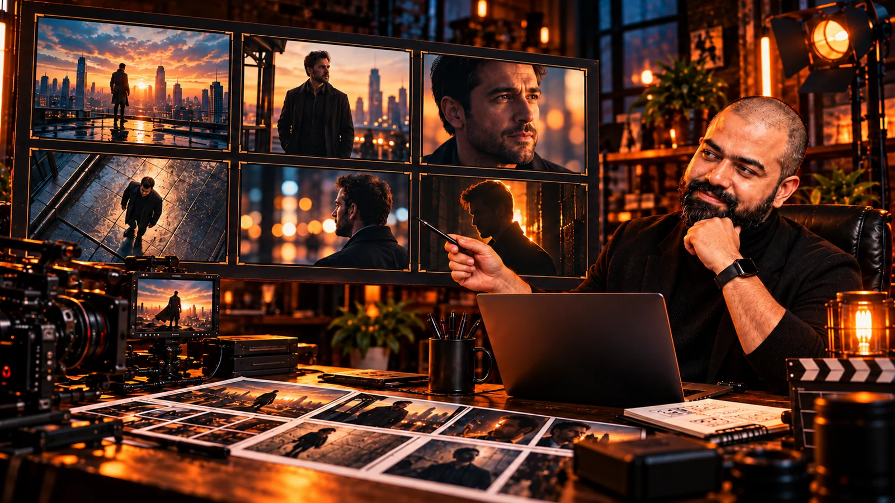

God Movie Maker's Playbook
AI FilmCraft's cinematic vocabulary reference: camera and framing, movement, light, optics, colour, atmosphere, acting, style, editing, texture, AI terminology and sound.
OPEN VOCABULARY REFERENCE
Analyse at least ten scenes using reference frames and precise descriptions of camera, movement, lighting, lens characteristics, colour and acting.
OPEN PLAYBOOKUse the vocabulary reference to name what you see, then use the script template to organise those observations. Sources: AI FilmCraft.
AI FilmCraft's cinematic vocabulary reference: camera and framing, movement, light, optics, colour, atmosphere, acting, style, editing, texture, AI terminology and sound.
OPEN VOCABULARY REFERENCEAI FilmCraft's supporting worksheet has IMG + OST, VISUALS and JSON PROMPTS columns. Its first topic has ten scene slots. Use a personal copy; the source stays unchanged.
OPEN SCRIPT TEMPLATEThe God Movie Maker's Playbook is a vocabulary reference, not the interactive task page you are reading. Start with these six sections while reviewing each scene.
Framing describes how much of the subject is visible. Angle describes where the camera looks from. A close-up and a low angle can describe the same frame.
Static, pan, tilt, dolly, tracking and zoom describe different behaviours. Replay the clip before choosing a movement.
Describe the direction and quality of the light. Look at shadows and separation from the background.
Describe depth of field and visible distortion. Treat an exact focal length as an estimate unless you have evidence.
Describe the palette and contrast separately from the physical direction of light.
Watch expression, gesture and posture across the scene. A micro-expression may be missed in a single frame.
The reference also covers atmosphere, art direction, editing, texture, AI terminology and sound. Consult those sections when they help describe your chosen scene.
The orientation introduces camera angles and framing before asking groups to analyse a video. Choose a leader to share the screen; discuss the evidence together instead of collecting isolated labels.
Carry forward: a first breakdown that the group can explain.
The supplied script template pairs IMG + OST with VISUALS and JSON PROMPTS. Put the reference frame beside a plain-language description, then collect precise cinematic vocabulary. The template's example is a POV drone scene; it is a short example description, not a complete official JSON generation prompt.
Carry forward: traceable references and observations you can later turn into generation instructions.
At transcript 01:21:31, the instructor asks for a screenshot and full analysis of at least ten scenes. Keep camera, point of view, movement, lighting and the remaining cinematic details with each reference. Use the playbook to complete the exercise.
First fix: if a term is unfamiliar, look it up before asking an assistant.
Record scene references, visuals and prompt-ready vocabulary in your own homework copy; consult the supplied script template.
Help interpret uncertain cinematic terms using the reference PDF and scene evidence after your own observation.
An alternative assistant for interpreting the reference PDF and scene evidence; check its suggestions against the clip.
Study shot examples and replay a chosen video to inspect camera movement and acting.
Look up unfamiliar shot vocabulary before asking an assistant.
No official reusable prompt was supplied for this session.
Compare the frame with the vocabulary reference. Search Google or YouTube for examples, then use the closest term you can justify.
Replay the clip. A screenshot only captures one moment. If the movement is still unclear, mark it uncertain rather than making a confident guess.
Compare its answer with your frame, clip and reference definitions. Use ChatGPT or Gemini to investigate a doubt; retain the evidence and your own review.